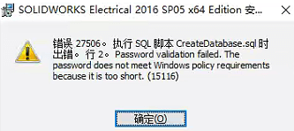
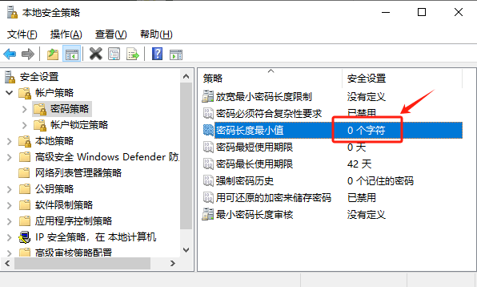
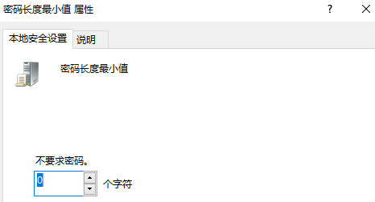
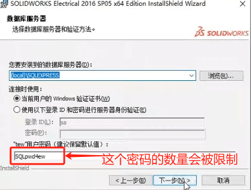

密码验证识别失败
安装SQL数据库相关程序时，密码验证识别不符合策略要求
在启用码软件安装过程中显示以下错误消息：
密码验证失败。密码不符合 Windows 策略要求，因为它太短
在所有版本的 Windows 中，当启用密码最大长度的密码策略时，都会出现此问题。若要成功安装，请通过在“运行”框中运行 secpol.msc 或从命令提示符运行来禁用此策略。
然后，将显示“本地安全策略”窗口，如下所示。
单击“帐户策略”-“>密码策略”，然后将最大密码长度设置为零（请参阅下面的屏幕截图）。
安装程序
已知的相关安装程序有：
electrical
可有在安装程序的密码里，修改密码长度。
